——将图形显示在屏幕上。

在屏幕上画出三角形
为什么是三角形进行划分
- 最基本的多边形，可以组成其它多边形。
- 三角形一定在一个平面内。
- 三角形的内外定义清楚（可以通过向量叉积判断一个点是否在三角形内）。
- 方便进行插值运算（重心坐标）
对三角形进行采样（Sampling）
采样：对函数进行离散化。
1 | for(int x = 0; x < xmax; x++){ |
基本图形：
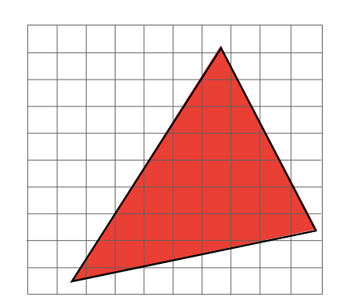
如果像素中心(x+0.5,y+0.5)在三角形内部就进行采样：
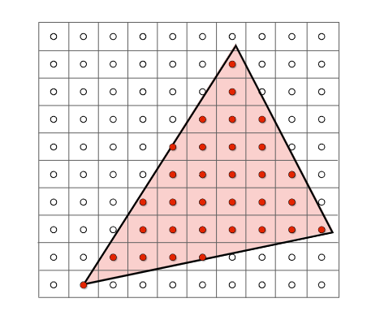
定义采样函数：
判断一个点是否在三角形内部
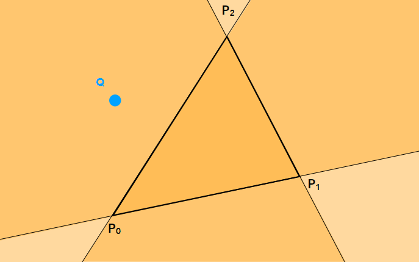
对于点Q与$\triangle P_0P_1P_2$,按照三角形顶点的顺序与Q进行叉乘有:
因此可以判断点Q在三角形外。
锯齿（Jaggies）（走样（Aliasing））
最终我们对三角形的采样：
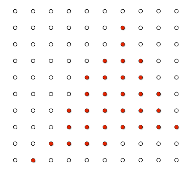
三角形最终显示到屏幕上：
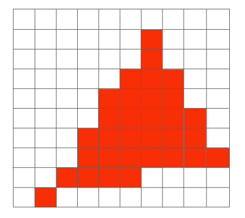
会发现有严重的锯齿（走样）！
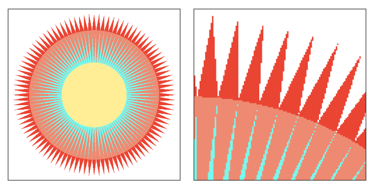
抗锯齿（反走样）（Antialiasing）
Sampling Artifacts（瑕疵）
锯齿：
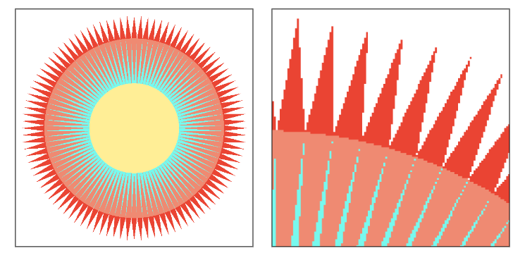
对屏幕空间的采样不够。
摩尔纹：
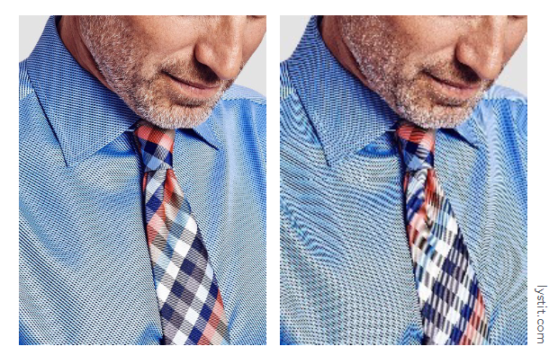
把屏幕上的一张大小为 m n 的图去掉所有奇数行和奇数列的像素，然后把剩下的像素重新拼接在一起（等于缩小了图片），然后依旧按照原始大小 mn 显示，就会出现摩尔纹。
本质上是对空间的采样不够。
车轮效应：

顺时针转的圆盘我们看着确实逆时针转，说明我们对时间的采样频率不够。
走样的本质
信号改变太快（高频率），但是采样慢了。
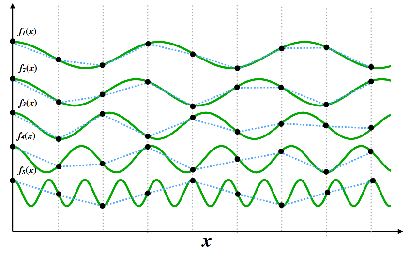
从$f_1(x)$到$f_5(x)$ 频率越来越快，黑点是我们的采样点，可以看到低频函数（$f_1(x)$）的采样后拟合较为理想，高频函数（$f_5(x)$）的采样并不理想。
模糊（Blurring）
反走样的一种方法就是对三角形进行模糊后采样。
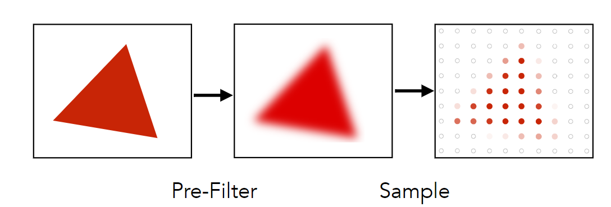
左图为原始采样，右图为模糊后再采样。
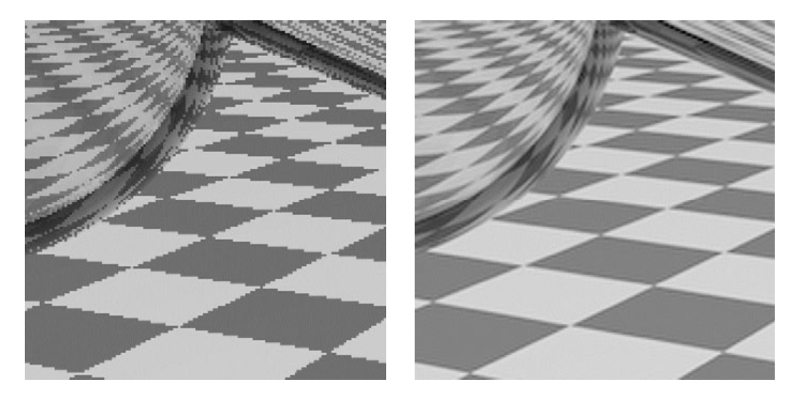
图片的频域（Frequency Domain）与空间域（spatial domain）
为了解释模糊后再采样为什么可以抗锯齿，我们要从图片的空间域与频域入手。
一个空间域函数f(x)可以经过傅里叶变换到频域上的函数F(w)，当然也可以经过逆傅里叶变换变回去。
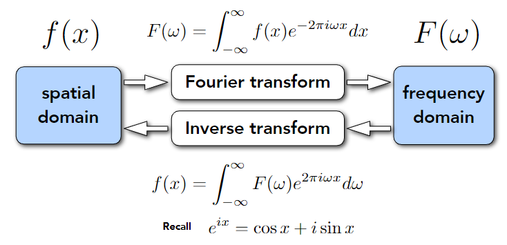
左图为图片的空间域，右图为图片的频域。
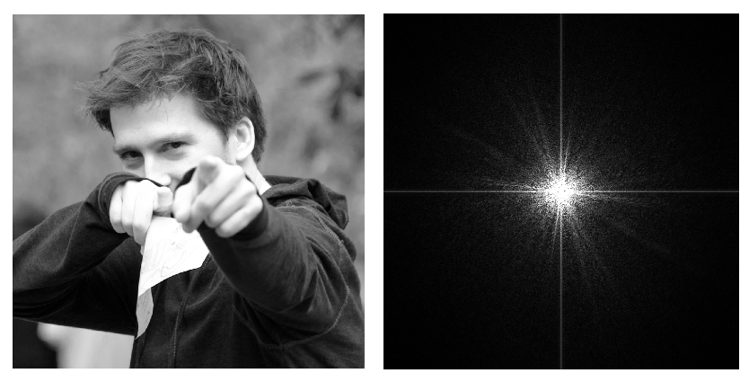
在频域中，中间是低频信号，从中心出发越靠外越是高频信号，亮度越高代表信号越多。
我们去除图片的低频信号（称之为高频滤波，只有高频信号可以通过），效果如下：
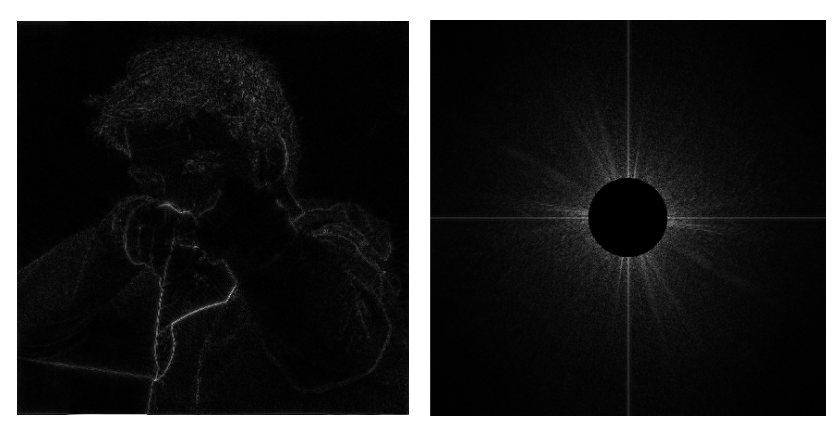
可以在空间域上观察到图片的外轮廓。
模糊的本质
我们去除图片的高频信号（称之为低频滤波，只有低频信号可以通过），效果如下：
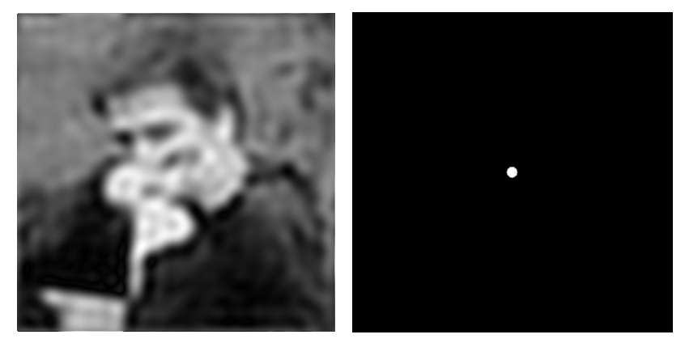
因此，模糊的本质就是低频滤波。
卷积（Convolution）
频域上的滤波的本质是将信号与滤波器在空间域上进行卷积的操作。
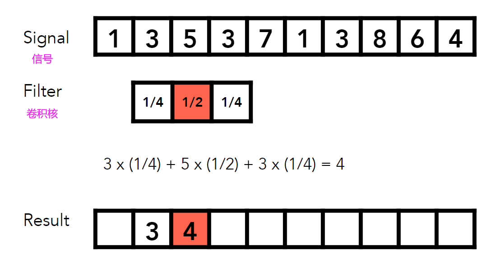
空间域上的卷积相当于频域上的乘积
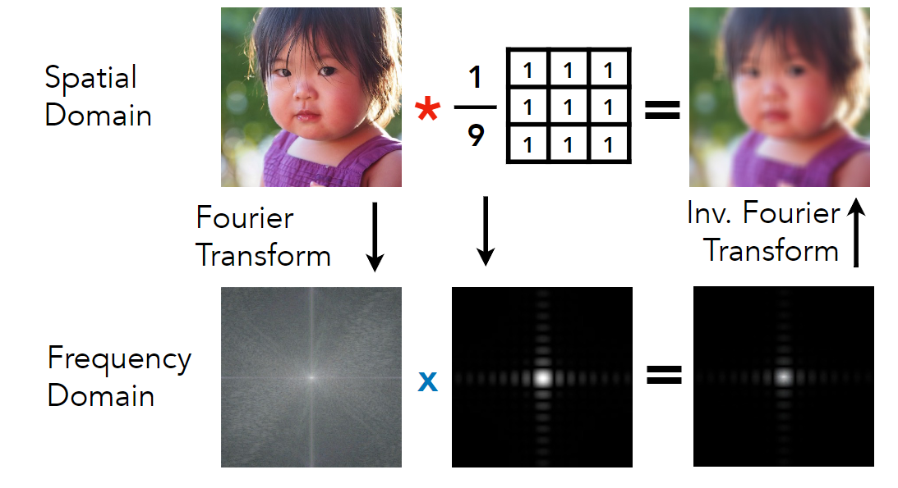
多重采样抗锯齿（MSAA）
对一个像素划分更多的采样点进行采样。
下图为一个像素，被划分了4X4的采样点。
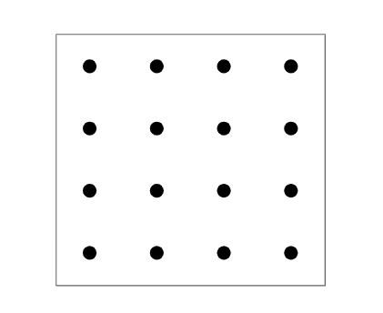
对三角形进行采样：
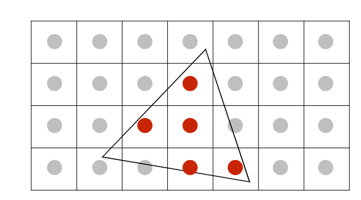
每个像素不再是单一的采样点，而是被划分成了2X2的采样点。
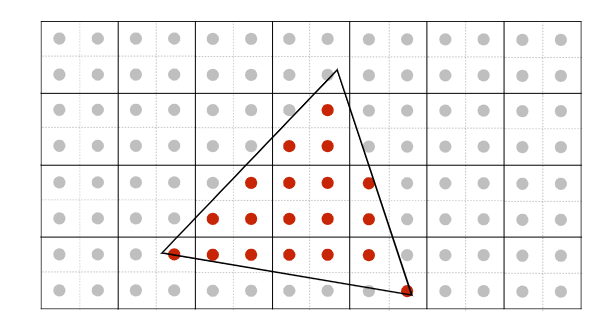
通过像素内的平均，计算出每个像素的颜色。
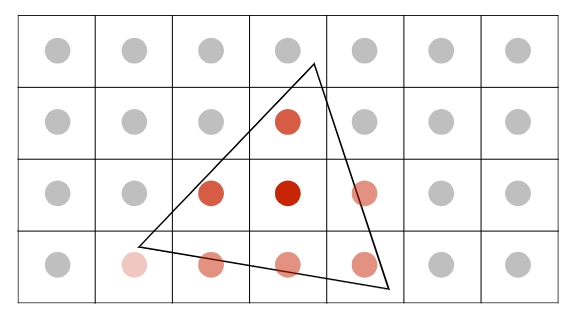
将组合好的信号，发射到屏幕上。
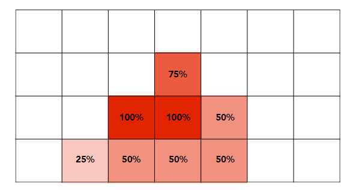
深度检测
画家算法
我们先画（光栅化）远处的物体，再画（光栅化）近处的物体。我们对需要光栅化n个物体，就对这n个物体进行深度排序，时间复杂度为O(nlogn)。但是有的时候，物体的深度并不好定义，比如下图的三个三角形，很难定义谁在最前面，谁在最后面。
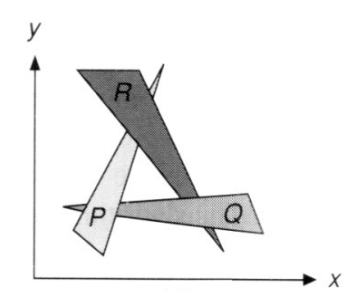
深度缓冲（Z-Buffer）
从处理每个物体的前后转变为处理每个像素的前后。记录最近的像素值。
每次在屏幕上光栅化图案的时候，我们需要记录两个缓存：
- frame buffer 最后的光栅化结果。
- depth buffer 深度缓存也可以叫z-buffer
我们这里定义深度z值与摄像机看向-z方向不同，我们假设z值越大，离我们越远。
左图为frame buffer，右图为depth buffer。
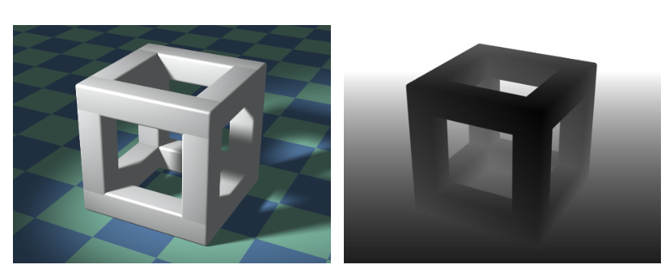
可以看到depth buffer中离我们越近，表现的越黑。
算法实现
1 | //zbuffer中的每个元素初始化为无穷 |
R为z-buffer中定义的无穷远，白色像素为原始屏幕，红色三角形为要光栅化的三角形，每个像素深度均为5。紫色三角形为要光栅化的第二个三角形，每个像素深度不一样。
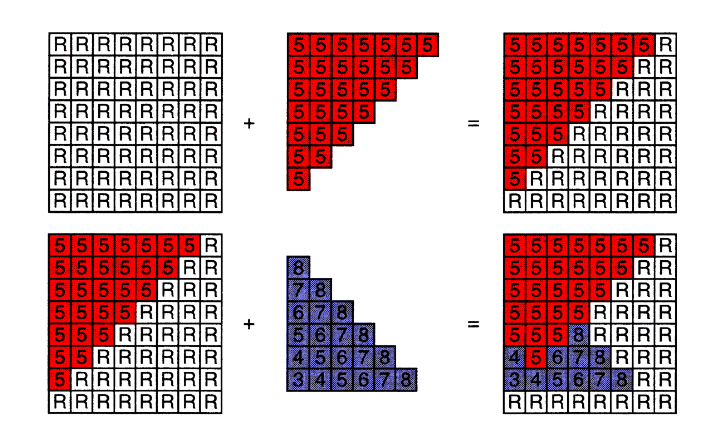
该算法时间复杂度为O(n)，对每个三角形都进行深度检测。